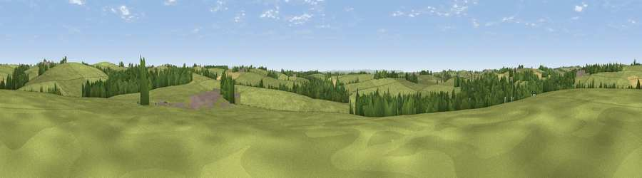

Viewpoint near Bradworthy
#35083 in England · top 84% of its area beats it · near BradworthyWhere it is
The exact computed spot (SS 30025 10725). Click the marker for map links.
The view, rendered

A 360° render of this exact spot computed from the terrain model, tree cover and land cover — summer colours, afternoon light, calibrated against photographs of famous viewpoints. Real trees, hedges and buildings will differ in detail.
The panorama
Grey silhouette: terrain skyline in each direction (720 bearings, Earth curvature and refraction included). Dashed green: skyline with trees (+15 m) and buildings (+8 m) as obstacles. Blue strip: how far the ground is visible on each bearing.
Where the view opens
Wedge length = distance to the farthest visible ground on that bearing (vegetation-aware). Rings at 10, 25 and 50 km.
What fills the view
81% grassland · 14% woodland · 4% cropland ·
Angular shares of the visible panorama (visual magnitude), not map area. Landscape diversity 0.27 (0–1 Shannon).
Key numbers
More beautiful places nearby
The staircase of upgrades: each row has a higher view potential than everything closer. Driving times are estimates from straight-line distance, calibrated against real road routing — check an actual route before setting out.
| Place | Direction | Drive | Score |
|---|---|---|---|
| Viewpoint near Bradworthy | NE · 1 km | ~3 min | 42.2 |
| Viewpoint near Bush | SW · 5 km | ~11 min | 54.8 |
| Viewpoint near Bush | SW · 6 km | ~13 min | 65.0 |
| Viewpoint near Poughill | WSW · 7 km | ~15 min | 73.3 |
| Viewpoint near Poughill | W · 8 km | ~17 min | 74.0 |
| Viewpoint near Morwenstow | W · 10 km | ~19 min | 74.5 |
| Viewpoint near Morwenstow | WNW · 10 km | ~20 min | 77.9 |
| Embury Beacon | NW · 12 km | ~22 min | 83.8 |
50.87097, -4.41710 · source: screening · position refined by local search. Computed location — check access rights before visiting.